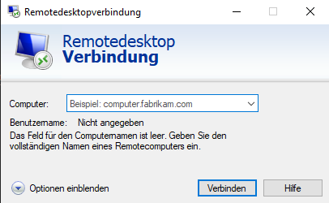
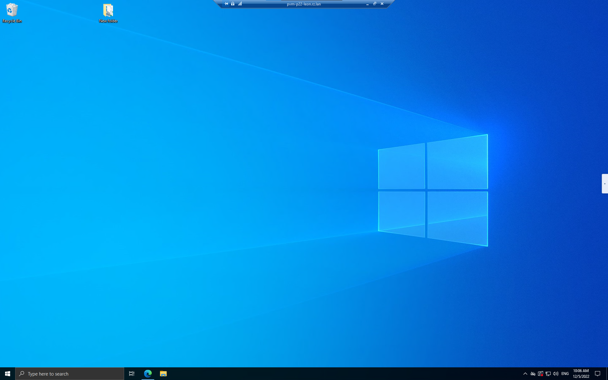

ViMi-RZ#
Eine Dokumentation um sich auf den Remote Desktop im ViMi-RZ zu Verbinden#
Warnung
Beachten Sie das Azubis in ihrem Account den Vorname nutzen und der Lehrkörper Ihren Nachnamen. Also ersetzen Sie (vorname) durch (nachname) wenn Sie zum Lehrkörper gehören.
1. Remote Desktop Client Starten#

Klicken Sie auf START oder auf die rechts unten im Bildschirm befindliche Lupe und geben Sie dort „mstsc“ ein.
Als Ergebnis sollten Sie „Remotedesktopverbindung“ bekommen. Diesen Eintrag doppelt anklicken.
2. Nun konfigurieren Sie den Client manuell in dem Sie folgende Optionen setzen:#
Klicken Sie auf „Erweitert“
Klicken Sie auf „Einstellungen“
Setzen Sie den Punkt „Diese Einstellungen für Remotedesktop-Gatewayserver verwenden“ und geben Sie bei Servername rds.zitau.de ein
Klicken Sie nun auf OK
rds.zitau.de
3. Remotedesktopverbindung Starten#
Klicken Sie auf „Allgemein“
Geben Sie bei „Computer“ pvm-p22-(vorname).rz.lan ein.
Geben Sie bei Benutzername Ihren Terminalserverbenutzernamen ein (vorname)@zitau.de
Klicken Sie auf Speichern
Klicken Sie auf Verbinden
pvm-p22-(vorname).rz.lan
(vorname)@zitau.de
4. Verbindung herstellen#
Nun werden Sie nach Ihrem Benutzernamen und Passwort gefragt.
Geben Sie diese ein und klicken Sie auf OK.
Es kann vorkommen, dass Sie nach einem zweiten Passwort gefragt werden. Dieses ist das Passwort für den Remote Desktop.
Geben Sie es ein und klicken Sie auf OK.
Bei der ersten Verbindung wird Ihnen ein Sicherheitszertifikat angezeigt.
Setzen Sie einen Haken bei „Nicht erneut nach Verbindungen mit diesem Computer fragen.“ und Klicken Sie auf „Ja“.
Nun können sind Sie mit Ihrem Remote Desktop verbunden.
Benutzernamen:
(vorname)@zitau.de
Kennwort:
Passwort für den Remote Desktop
5. Verbindung trennen#

Um die Verbindung zu trennen klicken sie auf das X in der mitte rechts
Warnung
Bitte niemals die PVM Herunterfahren!